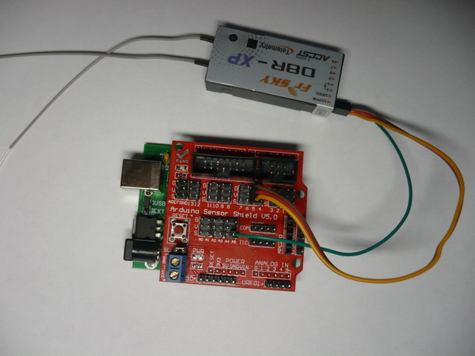
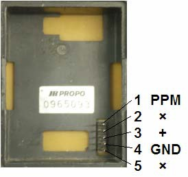

http://rc-master.ucoz.ru/publ/19-1-0-28
Декодер PPM с RC-аппаратуры на Arduino
Задача:
Имеется пульт системы радиоуправления и/или приемник с выходом CPPM. Хотим получить массив значений ширины импульса для каждого канала.
Использованное оборудование:
ПО:
Подключение:


Все провода стандартные и ничего паять и обжимать не надо - спасибо шилду.
Алгоритм:
Вешаем на входной пин прерывание на изменение уровня.
В прерывании первым делом проверяем состояние пина. Все действия выполняем только для состояния 0: Вычисляем разницу во времени с предыдущим импульсом. Если она больше 3500 мкс (синхропауза), то сохраняем номер текущего канала как количество каналов и сбрасываем номер текущего канала в 0. Иначе полученную разницу записываем в текущий канал и переходим к следующему каналу.
Вывод результата сделан на комп через последовательный порт. Туда же по ходу дела выводим RSSI с приемника.
Скетч: скачать
#include <PinChangeInt.h>
#define PPM_PIN 5
#define MAX_PPM_CHANNELS 25
volatile uint16_t temp_time;
volatile uint16_t up_time;
volatile uint16_t d_time;
volatile uint16_t ChannelsCount;
volatile uint16_t Channel[MAX_PPM_CHANNELS];
volatile uint8_t Curr_Channel;
void setup()
{
digitalWrite(19, HIGH); // включить резистор на выводе аналогового входа 0
pinMode(13, OUTPUT);
ChannelsCount==0xff;
Curr_Channel=0;
Serial.begin(9600);
Serial.println("Start");
TCCR1B = 0; //stop timer
TCCR1A = 0;
TCNT1 = 0; //setup
TCCR1A = 0;
up_time = 0;
TCCR1B = 0<<CS12 | 1<<CS11 | 0<<CS10;//0x1A; //start timer with 1/8
PCintPort::attachInterrupt(PPM_PIN, CalcPPM, CHANGE);
}
uint16_t Rssi;
void loop()
{
delay(50);
Rssi = analogRead(5);
delay(50);
Serial.println("RSSI="+String(Rssi));
Serial.println("Channels="+String(ChannelsCount));
for(uint8_t i=0;i<ChannelsCount;i++)
Serial.println("Channel[="+String(i)+"]="+String(Channel[i]));
digitalWrite(13, !digitalRead(13));
}
void CalcPPM()
{
temp_time = TCNT1;
if (!PCintPort::pinState)
{
if (up_time>temp_time) d_time=(0xffff-up_time+temp_time)>>1;
d_time = (temp_time-up_time)>>1;
up_time = temp_time;
if (d_time>3500)
{
//Sync
ChannelsCount=Curr_Channel;
Curr_Channel = 0;
}
else
{
//Channel
Channel[Curr_Channel]=d_time;
Curr_Channel++;
}
}
}